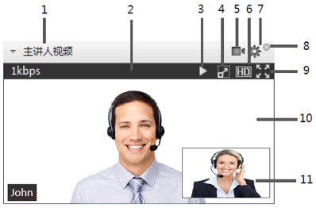

查看视频
在会议中，主持人可以设置视频面板的显示模式为主持人视频、主讲人视频、发言人视频或者视频轮偱模式。
➢ 如何开启视频模式
在工具栏中，单击，选择需要开启的视频模式，如表所示。
视频模式
系统显示“视频设置”窗口。
|
视频模式 |
功能说明 |
|---|---|
|
主持人视频 |
|
|
主讲人视频 |
|
|
发言人视频 |
大视频显示发言人视频，没有小视频窗口。 |
|
视频轮偱 |
在设定的时间间隔内切换视频显示画面。只有大视频，没有小视频窗口。 |
➢ 了解视频面板
视频面板，如图所示。
视频面板

| 序号 |
功能说明 |
|---|---|
|
1 |
视频模块标题栏，显示当前的视频模式。单击收缩或者展开视频模块。 |
|
2 |
工具栏，鼠标放在主视频面板才会浮现，鼠标离开后自动消失。 |
|
3 |
暂停或播放视频。 |
|
4 |
隐藏或显示小视频窗口。 |
|
5 |
关闭本地摄像头。 |
|
6 |
切换高清或者标清。 |
|
7 |
设置视频。 |
|
8 |
关闭主视频面板。 |
|
9 |
切换全屏或者非全屏。 |
|
10 |
大视频窗口。 |
|
11 |
小视频窗口。 |
➢ 如何设置视频轮循
设置视频轮偱，可以轮流查看与会者的视频画面。主持人可以开启“视频轮循”并设置视频画面切换的时间间隔。
1. 在工具栏中，单击 。
。
2. 选择“视频轮循”。
3. 选择视频轮循的间隔时间。
➢ 如何打开摄像头
在与会者列表中，单击自己右侧的摄像头图标，开启本地摄像头。